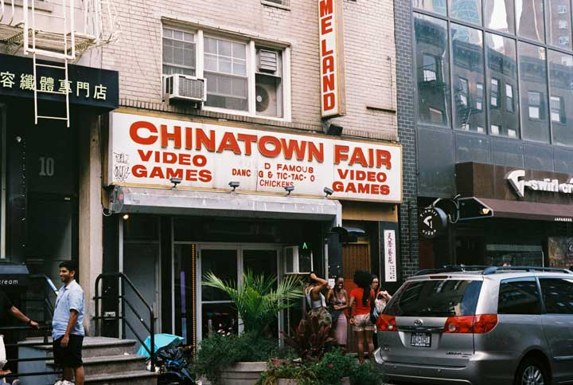

Every day, I’m sitting at a desk where I can feel each second slip away, dragging a piece of my soul with it. Once I step through your unassuming glass doors, there’s a visceral shift in my heart, as if the rest of the world seems to stop in place.
What is my own relationship to Chinatown? What role does recreation occupy in Chinatown's community? How should we think about "place" in the context of Chinatown today?
These are all questions that I thought about in the process of creating this project. The places in our neighborhoods are more than streets and buildings, but culminations of lives and emotions and relationships. For me, such a place is the Chinatown Fair Arcade: the last video arcade in New York City, a home away from home for me and generations of youth before my time. This letter is an opportunity for me to tell my story, to express gratitude, and to defamiliarize my own (and others') experience of the arcade.
Read Love Letter to An Arcade (I recommend you view it on a computer.)
About the project
I had the privilege of working on this project as part of Chinatown: Our Narrative Tours (CONTOURS), a critical mapping program created and led by Alina Shen. The mission of CONTOURS is to "connect and identify community resources within history, policy, and personal experiences of New York City’s Chinatown," taking on issues of gentrification and colonialism. Alina's work is incredibly valuable, and I'm grateful to have embarked on this journey with the help of her kindness, guidance, and patience.
Process
Background
CONTOURS hosted a summer project that enlisted young Asian American adults with a connection or interest in Chinatown to conduct their own projects that would "map" Chinatown from a critical perspective. I joined in out of fascination with the original idea that Alina had pitched.
I, however, felt like the odd one out in many ways. Rather than dismissing them as a simple case of impostor syndrome, I want to address my worries, as they were ultimately important to the project.
- A weak connection to Chinatown (or other Chinese-immigrant neighborhoods, for that matter) with the exception of the Chinatown Fair arcade, of which I was a frequent patron during the previous school year. This connection would ultimately become the crux of my project.
- A very weak connection to my community and culture. It felt a little disingenuous, and perhaps misguided, to speak about the community without having a personal connection to it.
Nevertheless, the project continued, in the hopes that something positive could be drawn from the whole experience—not only for me, but for the community that it was about.
Ideation
The whole process began with some intensive note-sketching and idea-mapping. The participants in the project met weekly with Alina, and she would pose weekly questions, prompts, and suggestions about our own topics. She also invited several guest speakers to come and conduct fascinating and inspiring workshops on various topics from geography to storytelling.
My original project interest was recreation in Chinatown. The relationship of Chinatown residents to recreational activities, de-stressing, and relaxation in public spaces always captivated me. From tai chi to basketball, these activities always appeared to be powerful expressions of home and community.
Over the course of the next few weeks, I conducted ethnographic research (or really, taking notes about the senses, events, and people) in public places such as Columbus Park, writing out my thoughts about my own relationship to the community and myself, unearthing a lot of things that I didn't know about myself. I decided to center in on my own experiences with the Chinatown Fair Arcade. A bit of research on the arcade's history also helped provide an important frame for my own perspective.
Creating the project
I had a bit of trouble thinking about the final project I wanted to produce. Alina encouraged me to write a series of love letters to the arcade, because she was fascinated by the emotions that came up when I talked about the arcade.
I wanted to create something that could capture the unique sensory experience of being in the arcade. After sifting through some wacky ideas such as music videos, I decided to create a simple webpage for one love letter, for several reasons:
- It would be a great way to practice my own creative web design skills.
- A webpage exists in a strange contradiction to its subject, the arcade. The webpage is accessible from anywhere, but it also exists solely in a digital space. The arcade, on the other hand, is very much a physical place in contrast with its digital machines. The webpage might exist forever, while the arcade might disappear in a few years. This seeming contradiction of the late 20th century arcade existing in a 21st century, quasi-physical, quasi-digital world is a huge factor in my own perspective of the subject. Therefore, I choose to recognize and honor that clash rather than avoid or circumvent it.
I wanted the page to scroll down like a storytelling narrative; essentially, in the linear way that a love letter would be written. Drawing inspiration from website portfolio pages and business landing pages, I separated the letter into visually defined sections with parallax photograph backgrounds.
Stylistically, I chose to take photos of the arcade during the daytime and at night--in ways that could capture both the genial family feel of the venue from the outside during the day and the electric atmosphere from the inside at night. In the vein of a 20th-21st century clash, I created the letter in the vein of a series of iMessage texts.
The webpage is hosted on GitHub pages, and was written from scratch using HTML and CSS. Photos were taken on a Nikon FM2 loaded with Fuji Superia 400 film.
A showcase was held at Chatham Square library to celebrate the completion of our projects. We also led mini-tours of the areas of interest to our project. I, of course, led folks on a brief journey to the Chinatown Fair Arcade.
What's next?
Mapping Chinatown
The process of researching and writing for this letter was very eye-opening. Most of all, I learned a ton about my own personal identity. Hearing the encouragement and reception from Alina and the folks who viewed my project was not only very gratifying, but it helped me realize something: if you have a story to tell, there is always someone who will hear it.
"...if you have a story to tell, there is always someone who will hear it."
More than that, though, this project helped me gain a closer connection to Chinatown. Although I unfortunately didn't get the opportunity to directly interact with any community members, I feel more comfortable doing so as someone who is a little more familiar with the area. I would love to expand on this topic in the future by conducting interviews and other kinds of research centered on other members of Chinatown's community.